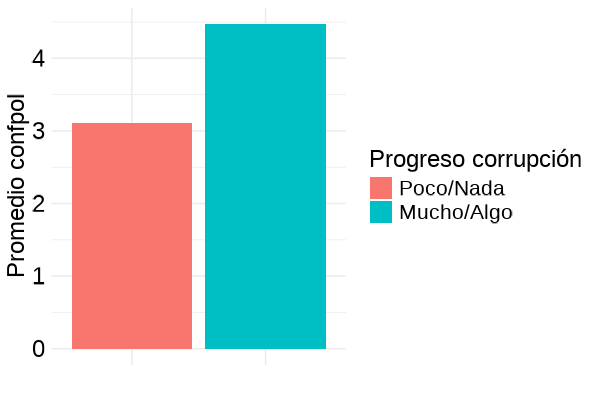
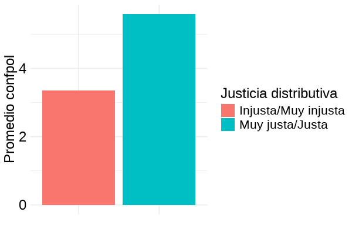
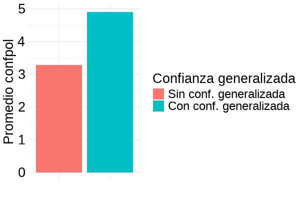

Una aproximación empírica a partir del caso chileno
Juan Pablo Díaz
Presentación Seminario de Título II
30 de octubre del 2025
La confianza política se define como “la expectativa de que las instituciones políticas funcionen según reglas justas incluso en ausencia de escrutinio constante” (Marien, 2013).
Dos grupos de factores que explicarían su origen (Mishler & Rose, 2001; Van der Meer & Zmerli, 2017; Zmerli, 2022):
La evidencia empírica dice que ambos grupos inciden en la construcción de confianza política, aunque las primeras importarían más que las segundas.
Las investigaciones previas tienen, al menos, dos grandes limitaciones que oscurecen la comprensión de los factores asociados a la confianza política.
Por un lado, gran parte de estos resultados se han construido sobre información de democracias consolidadas, con importante crecimiento económico, bajos niveles de corrupción y altos niveles de igualdad y de confianza generalizada. En contraste, en esta investigación se plantea la posibilidad de que estos resultados varíen en democracias deficientes y cuyas sociedades son de baja confianza, como la chilena.
Por otro lado, se ha ignorado la posibilidad de que ambos grupos de factores interactúen entre sí a la hora de relacionarse con la confianza política. En particular, se argumenta que al ser la confianza generalizada una disposición moral que orienta la interpretación de los fenómenos a su alrededor, esta podría moderar la relación entre desempeño institucional y confianza política.
Pregunta de investigación: ¿Cómo influyen la percepción del desempeño institucional y la confianza generalizada en la confianza política de los ciudadanos chilenos?
Objetivos específicos:
Analizar el rol de la percepción del desempeño institucional en la confianza política de los ciudadanos chilenos.
Examinar el rol de la confianza generalizada en la confianza política de los ciudadanos chilenos.
Explorar si varía o no la relación entre la percepción del desempeño institucional y la confianza política al moderar por el nivel de confianza generalizada de los ciudadanos chilenos.
Confianza de tipo estratégica que se puede resumir en la fórmula “A confia en B para que haga x” (Hardin, 1999, p. 26). La decisión de confiar implica un riesgo, por lo que se toma sobre la base de información sobre el objeto de confianza.
Desempeño económico: los ciudadanos evaluarían sus instituciones en función de la capacidad que estas tienen de satisfacer sus expectativas de incremento en los estándares de vida de la población (McAllister, 1999; Quaranta & Martini, 2016; Thomassen, 1998).
Corrupción: los individuos que identifican el mal uso de fondos públicos para fines privados como una práctica recurrente al interior de una institución, van a calificar a esta de deshonesta e injusta, tendiendo a confiar menos en ella (Beesley & Hawkins, 2022; Uslaner, 2013).
Justicia distributiva: en la medida en que los ciudadanos consideren la distribución de ingresos incompatible con los principios de igualdad, equidad y suficiencia, percibirán esta distribución como injusta y confiarán menos en las instituciones políticas (Tyler et al., 1985; Tyler, 2015; Zmerli & Castillo, 2015).
La confianza generalizada se entiende como la confianza que se deposita sobre la mayoría de la gente. En este sentido, no se construye sobre la base de información, sino que mediante una disposición moral a confiar en cuanto son parte de nuestra misma comunidad moral (Uslaner, 2002).Se resume en la frase “A confía” (Uslaner, 2002, p. 26).
Funciona como un lente a través del cual cierto tipo de individuo interpreta el mundo que lo rodea de forma positiva (Oskarsson, 2010). Siguiendo esta lógica, se argumenta que aquellas personas con niveles más altos de confianza generalizada manifestarían un mayor grado de confianza en las instituciones políticas, en cuanto proyectarían en estas su perspectiva optimista.
A su vez, estos individuos, al poseer una predisposición a confiar que no depende de la información que tienen del objeto en el que se confía, serían menos sensibles a disminuir su confianza en las instituciones políticas en función de una evaluación negativa de su desempeño al corto plazo.
Variables:
Dependiente: Indice de confianza política (\(\alpha\) = 0.82) con valores de 1 a 10. Incluye confianza en el Gobierno, el Congreso, el Poder Judicial y los Partidos Políticos.
Independientes:
Control: sociodemográficas (sexo, edad, religión, educación y ESS) y políticas (partido político, eje izquierda-derecha)
Como base de datos se usó la Encuesta Latinobarómetro 2024. Para el caso chileno, esta encuesta presenta una muestra de 1200 entrevistados, los cuales fueron seleccionados mediante un muestreo probabilístico en tres etapas y representan al 100% de la población adulta en el país.
Para los análisis, se construyeron un total de seis modelos de regresión lineal (MCO) siguiendo una estrategia incremental, en la cual se van incorporando nuevos términos a la regresión para comprobar si se mantienen los efectos percibidos. Siguiendo esta lógica, el Modelo 1 se calculó solo con las variables de percepción del desempeño. Luego, en los Modelos 2 y 3 se introdujeron, respectivamente, la variable de confianza generalizada y las variables de control. Por último, en los modelos 4, 5 y 6 se introdujeron cada uno de los términos de interacción por separado.



| Modelo 1 | Modelo 2 | Modelo 3 | Modelo 4 | |||||
| Predictores | beta | se | beta | se | beta | se | beta | se |
| Perc. situación económica nacional | 0.49 *** | 0.03 | 0.46 *** | 0.03 | 0.42 *** | 0.04 | 0.39 *** | 0.04 |
| Progreso en corrupción | 0.77 *** | 0.12 | 0.72 *** | 0.11 | 0.65 *** | 0.12 | 0.66 *** | 0.12 |
| Justicia distributiva | 1.56 *** | 0.18 | 1.32 *** | 0.18 | 1.26 *** | 0.19 | 1.18 *** | 0.19 |
| Conf. generalizada | 0.87 *** | 0.14 | 0.79 *** | 0.14 | -0.12 | 0.45 | ||
| Perc. situación económica X Conf. generalizada | 0.16 * | 0.08 | ||||||
| Observations | 1004 | 1004 | 1004 | 1004 | ||||
| R2 / R2 adjusted | 0.333 / 0.331 | 0.358 / 0.355 | 0.377 / 0.367 | 0.380 / 0.369 | ||||
| * p<0.05 ** p<0.01 *** p<0.001 | ||||||||
Mas allá de la dicotomía: la confianza política es un fenómeno complejo, en cuya construcción inciden tanto la evaluación racional del desempeño como la disposición moral a confiar en los demás.
Cómo advierten Bargsted et al.(2023), se evidencia que en sociedades de baja confianza como la chilena, la confianza generalizada adquiere particular importancia para la generación de confianza política, incluso superando algunos de los indicadores de percepción del desempeño.
Destaca la importancia de la justicia distributiva por sobre los demás indicadores. Esto implicaría que los ciudadanos chilenos responsabilizan a las instituciones políticas de la desigualdad de ingresos en el país.
El efecto de moderación encontrado señalaría que, a la hora de construir la confianza política, ambos tipos de factores no importarían solo por separado, sino que también interactúan entre sí. Sin embargo, a diferencia de lo planteado inicialmente, esta interacción no implica reducción sino que potencia el efecto de estas.
Llevar a cabo modelos de tipo multinivel sobre datos longitudinales para analizar cómo estos efectos varían en el tiempo (si es que lo hacen).
Incluir variables contextuales y compararlas con las de percepción.
Expandir el radio de estudio hacia mas países de la región.